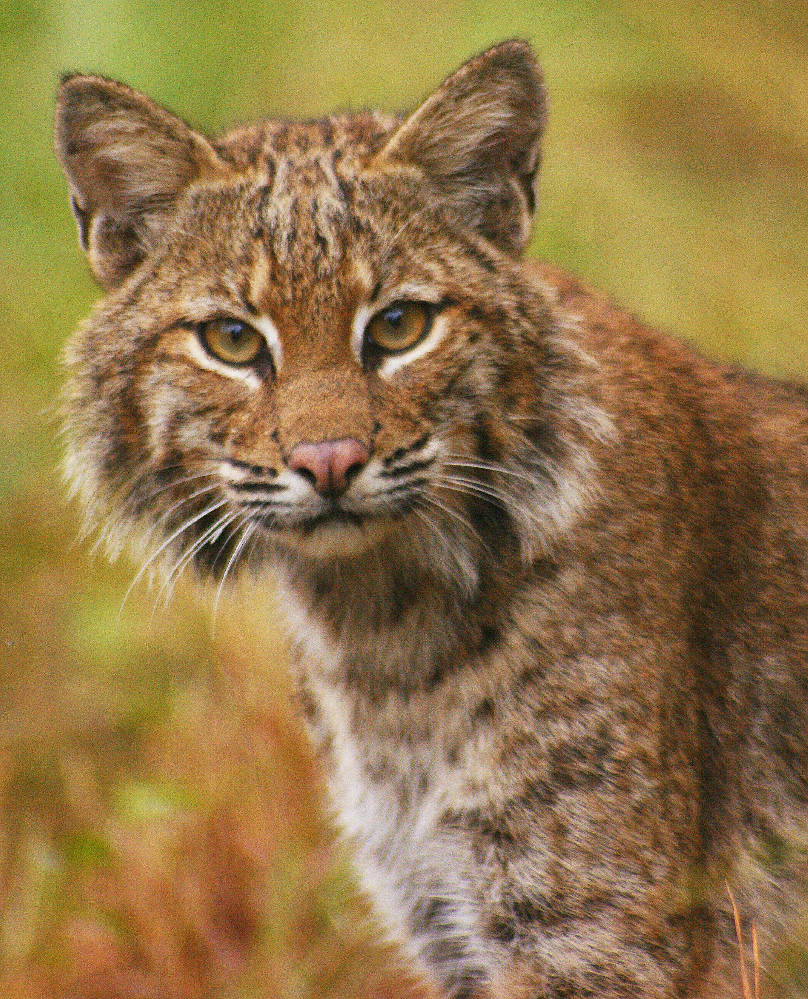
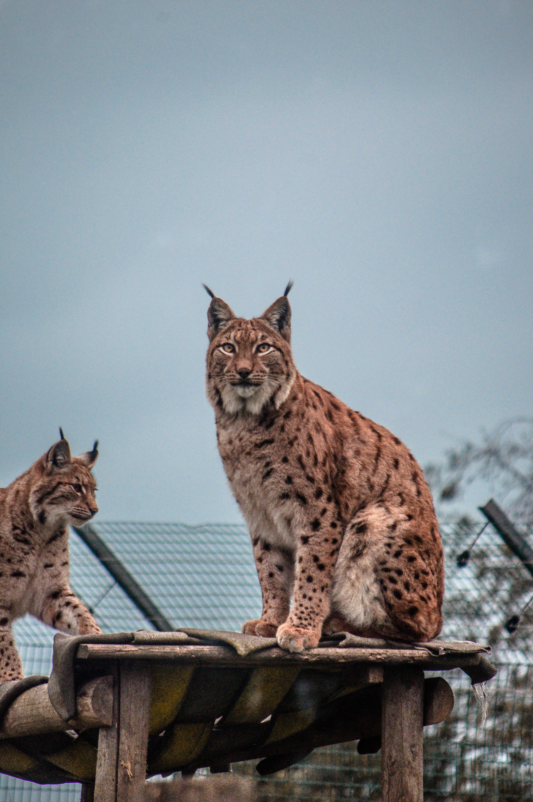

Gato Selvagem
da família FelidaeO gato selvagem é um carnívoro de médio porte, semelhante aos gatos-domésticos, porém mais robusto. A cabeça é grande e arredondada, com um focinho curto e poderosas mandíbulas.
A pelagem é acastanhada e/ou acinzentada, o que permite camuflar-se no seu ambiente. A principal característica distintiva é a sua cauda grossa e de aspecto tufado, que apresenta 3 a 5 anéis pretos, largos e bem espaçados, terminando numa ponta negra arredondada.
O gato-selvagem habita preferencialmente bosques fechados, mas também ocorrem em matagais mediterrâneos e florestas de coníferas.
É um animal tímido e esquivo, de hábitos noturnos e difícil de observar na natureza. Como quase todos os felinos, o gato-selvagem é um animal solitário.
"Cada animal controla um território que defende tenazmente de invasores. Machos e fêmeas procuram-se apenas na época do acasalamento, no final do inverno boreal."
- Surgiu: 13 mil anos
- Tipo: Mamífero
- Idade Média: 10 anos
- Macho adulto: 7 kg
- Fêmea adulta: 5 kg
- Família:Felidae
As crias são amamentadas entre 6 a 7 semanas, e a partir dessa idade começam a tornar-se independentes e a procurar um território onde estabelecer-se. As fêmeas alcançam a maturidade sexual aos 9-10 meses de idade, e os machos aos 12 meses.
As fêmeas costumam ir a caça, devido à sua maior agilidade. Entretanto, nem sempre a caça é garantida. Assim, os leões podem passar até três dias sem se alimentarem.